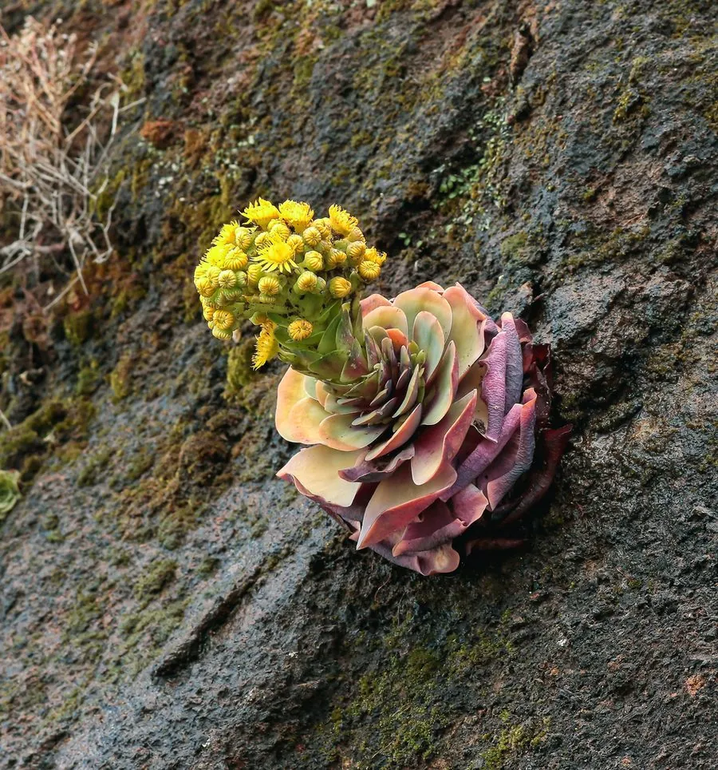

多肉植物 · 植物界
山地玫瑰 Greenovia diplocycla

景天科山地玫瑰属多肉，叶片在休眠期紧密包裹成玫瑰状，原产加那利群岛，夏季休眠、秋冬生长，是著名的“玫瑰多肉”。
- 分类
- 门被子植物门纲木兰纲目虎耳草目科景天科属山地玫瑰属
- 栖息环境
- 加那利群岛干旱山地的岩缝与火山砾石坡
- 地理分布
- 原产西班牙加那利群岛，世界各地盆栽观赏
- 保护级别
- 暂无评估
物种志
山地玫瑰为景天科山地玫瑰属的肉质草本，叶片匙形，长 3–5 厘米，灰绿色，表面覆薄白粉，边缘有细锯齿。生长期叶片展开成莲座状，直径 5–10 厘米；夏季休眠时叶片逐层向内包裹，紧密合拢成玫瑰花朵状，中心呈淡黄绿色。花梗自叶腋抽出，花黄色，花期春季至初夏，开花后母株常枯萎。
山地玫瑰原产加那利群岛的干旱山地，喜凉爽、阳光充足和通风良好的环境，耐旱、怕湿热，夏季高温时进入休眠。它休眠时叶片包成玫瑰状，是“玫瑰多肉”的代表，深受爱好者喜爱。栽培用颗粒土，秋季至春季生长季干透浇透，夏季断水遮阴、保持通风；繁殖以播种和分株为主，也可用侧芽扦插。
形态与习性
- 冠幅莲座直径 5–10 厘米
- 休眠夏季叶片包裹成玫瑰状
- 花期春季至初夏，花黄色
- 光照喜充足光照，夏季遮阴
- 水分生长期干透浇透，夏季断水
- 土壤颗粒土为主，排水透气
- 繁殖播种、分株、侧芽扦插
- 注意开花后母株常枯萎
趣味知识
- 山地玫瑰夏季休眠时叶片层层包裹，像一朵盛开的玫瑰。
- 它原产加那利群岛，喜欢凉爽干燥，最怕夏季闷热潮湿。
- 开花后母株常会枯萎，可用侧芽或种子延续后代。